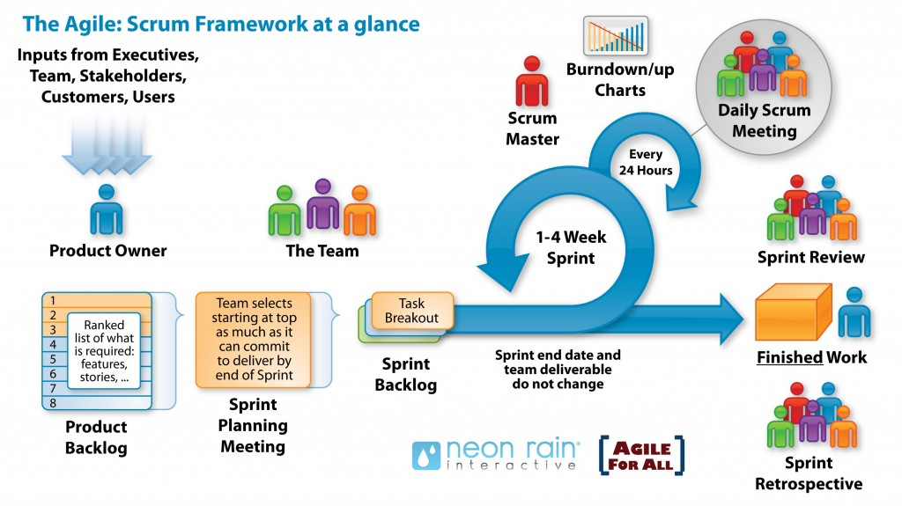

В даний час Scrum є однією з найбільш популярних «методологій» розробки ПЗ. Згідно з визначенням, Scrum - це каркас розробки, з використанням якого люди можуть вирішувати проблеми, при цьому продуктивно і виробляючи продукти найвищої значущості
Коли говорять про методологію Scrum, найчастіше мають на увазі гнучку методологію розробки ПЗ, побудовану на основі правил та практик Scrum
Авторами Scrum заявлені такі особливості:
- Легкий (англ. Lightweight)
- Зрозумілий, доступний
- Складний в освоєнні
(Практично взаємовиключні параграфи)
Ролі у Scrum
У класичному Scrum існує 3 базові ролі:
- Product owner
- Scrum master
- Команда розробки (Development team)
Product owner (PO) є сполучною ланкою між командою розробки та замовником. Завдання PO — максимальне збільшення цінності продукту, що розробляється, і роботи команди.
Одним із основних інструментів PO є Product Backlog. Product Backlog містить необхідні для виконання робочі завдання (такі як Story, Bug, Task та ін.), відсортовані як пріоритет (терміновості).
Scrum master (SM) є службовцем лідером (англ. servant-leader). Завдання Scrum Master — допомогти команді максимізувати її ефективність усунення перешкод, допомоги, навчання та мотивації команді, допомоги PO
Команда розробки (Development team, DT) складається з фахівців, які виконують безпосередню роботу над продуктом, що виробляється. Згідно The Scrum Guide (документу, що є офіційним описом Scrum від його авторів), DT повинні мати такі якості та характеристики:
- Бути самоорганізується. Ніхто (включаючи SM та PO) не може вказувати команді, як їм перетворити Product Backlog на працюючий продукт
- Бути багатофункціональною, мати всі необхідні навички для випуску працюючого продукту
- За виконувану роботу відповідає вся команда, а не індивідуальні члени команди
Рекомендований розмір команди - 7 (плюс-мінус 2) особи. Згідно з ідеологами Scrum, команди більшого розміру вимагають надто великих ресурсів на комунікації, тоді як команди меншого розміру підвищують ризики (за рахунок можливої відсутності необхідних навичок) та зменшують розмір роботи, який команда може виконати в одиницю часу.
Процес Scrum
Основою Scrum є Sprint, протягом якого виконується робота над продуктом. Після закінчення Sprint має бути отримано нову робочу версію продукту. Sprint завжди обмежений за часом (1-4 тижні) та має однакову тривалість протягом усього життя продукту.
Перед початком кожного Sprint проводиться Sprint Planning, на якому проводиться оцінка вмісту Product Backlog та формування Sprint Backlog, що містить завдання (Story, Bugs, Tasks), які мають бути виконані у спринті. Кожен спринт повинен мати мету, яка є мотивуючим фактором і досягається за допомогою виконання завдань із Sprint Backlog.
Щодня проводиться Daily Scrum, на якому кожен член команди відповідає на запитання «що я зробив учора?», «що я планую зробити сьогодні?», «Які перешкоди на роботі я зустрів?». Завдання Daily Scrum — визначення статусу і прогресу роботи над Sprint, раннє виявлення перешкод, вироблення рішень зі зміни стратегії, необхідні досягнення цілей Sprint'а.
По закінченню Sprint'а виробляються Sprint Review та Sprint Retrospective, завдання яких оцінити ефективність (продуктивність) команди в минулому Sprint'і, спрогнозувати очікувану ефективність (продуктивність) у наступному спринті, виявленні наявних проблем, оцінки ймовірності завершення всіх необхідних робіт по продукту та інше
Схематичне зображення процесу наведено на наступному малюнку:
Важливі особливості, що часто забуваються
Часто можна почути, що Scrum не працює або працює гірше, ніж очікувалося. Необхідно зауважити, що найчастіше так відбувається з однієї з таких причин:
- Scrum застосовується неправильно чи неповністю. Згідно з авторами Scrum, емпіричний досвід є основним джерелом достовірної інформації. Необхідність повного та точного виконання Scrum зазначена в The Scrum Guide та обумовлена нетиповою організацією процесу, відсутністю формального лідера та керівника.
- Недооцінено важливість роботи із забезпечення мотивації команди. Одним з основних принципів Scrum є багатофункціональні команди, що самоорганізуються. Згідно з дослідженнями соціологів, чисельність самовмотивованих співробітників, здатних на самоорганізацію не перевищує 15% від працездатного населення. Таким чином, лише невелика частина співробітників здатна ефективно працювати в Scrum без істотних змін у ролях Scrum master та Product Owner, що суперечить ідеології Scrum, і потенційно призводить до неправильного чи неповного використання Scrum.
- Scrum застосовується для продукту, вимоги до якого суперечать ідеології Scrum. Scrum відноситься до сімейства Agile, так що Scrum вітає зміни в вимогах у будь-який момент (Product backlog може бути змінений у будь-який момент). Це ускладнює використання Scrum у fixed-cost/fixed-time проектах. Ідеологія Scrum стверджує, що заздалегідь неможливо передбачити всі зміни, таким чином немає сенсу заздалегідь планувати весь проект, обмежившись тільки just-in-time плануванням, тобто планувати тільки ту роботу, яка має бути виконана у поточному Sprint. Існують та інші обмеження.
Достоїнства і недоліки
Scrum має досить привабливі переваги. Scrum орієнтований на клієнта, адаптивний. Scrum дає клієнту можливість робити зміни у вимогах у будь-який час (але не гарантує того, що ці зміни будуть виконані). Можливість зміни вимог є привабливою для багатьох замовників ПЗ.
Scrum достаточно прост в изучении, позволяет экономить время, за счет исключения не критичных активностей. Scrum позволяет получить потенциально рабочий продукт в конце каждого Sprint'а. Scrum делает упор на самоорганизующуюся, многофункциональную команду, способную решить необходимые задачи с минимальной координацией. Это особенно привлекательно для малых компаний и стартапов, так как избавляет от необходимости от найма или обучения специализированного персонала руководителей.
Звісно, у Scrum є й важливі недоліки. Зважаючи на простоту і мінімалістичність, Scrum задає невелику кількість досить жорстких правил. Однак це вступає в конфлікт з ідеєю клієнтоорієнтованості в принципі, тому що клієнту не важливі внутрішні правила команди розробки, особливо якщо вони обмежують клієнта. Наприклад, у разі потреби, за рішенням клієнта Sprint backlog може бути змінений, незважаючи на явну суперечність із правилами Scrum.
Проблема є більшою, ніж здається. Т.к. Scrum відноситься до сімейства Agile, в Scrum не прийнято, наприклад, створення плану комунікацій та реагування на ризики. [3] Таким чином, роблячи складним чи неможливим формальне (юридичне чи адміністративне) протидію порушенням правил Scrum.
Інший слабкою особливістю Scrum є наголос на багатофункціональну команду, що самоорганізується. При здається зниження витрат на координацію команди, це призводить до підвищення витрат на відбір персоналу, його мотивацію, навчання. За певних умов ринку праці формування повноцінної, ефективної Scrum команди може бути неможливим.
Крім Scrum я рекомендую звернути увагу на Канбан. У цьому відео невеликий огляд методу Канбан: